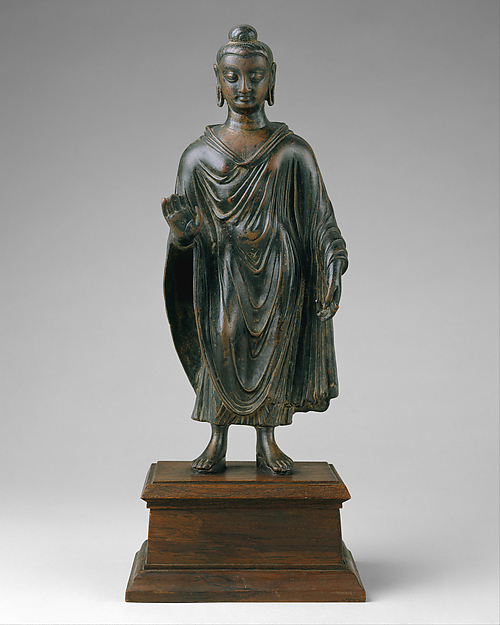

上座部
パーリ三蔵を中心に伝承される南方仏教。
SCHOOLS
上座部・中観・唯識・浄土・禅・密教・日本諸宗派を混同せず比較します。

パーリ三蔵を中心に伝承される南方仏教。
中観・唯識・如来蔵・浄土など複数の思想潮流がある。
天台・真言・浄土・禅・日蓮など、歴史的背景ごとに理解する。
DO NOT FLATTEN
上座部は現存する仏教伝統・教団の大きな系統です。一方、中観や唯識は主として哲学・解釈学的な思想潮流であり、同じ分類階層ではありません。浄土や禅も地域と時代によって教団・実践・思想の意味合いが変わります。
日本の宗派を比較するときも、開祖だけでなく、依拠経典、救済観、修行方法、僧団制度、在家との関係を分けて見る必要があります。例えば「禅は坐禅」「浄土は念仏」という一語要約だけでは、内部の多様性を落としてしまいます。
このサイトでは、まず歴史上どの層に属するかを示し、その上で教義と実践を比較します。異なる伝統を優劣の一本線に並べることはしません。
背景：仏教2500年の歴史
DO NOT MIX
スリランカや東南アジアに続く現存の仏教伝統。パーリ三蔵を主要な聖典伝承とします。
大乗仏教内部で展開した思想的立場です。「宗派名」と単純に同一視せず、成立した思想史の文脈で扱います。
東アジアで発展した信仰・実践の伝統。インドの初期仏教と同一の形で存在したものではありません。
天台・真言・浄土・浄土真宗・禅・日蓮系など、それぞれの歴史と教義を個別に説明します。
違いを消さずに比べると、仏教が見えてくる。